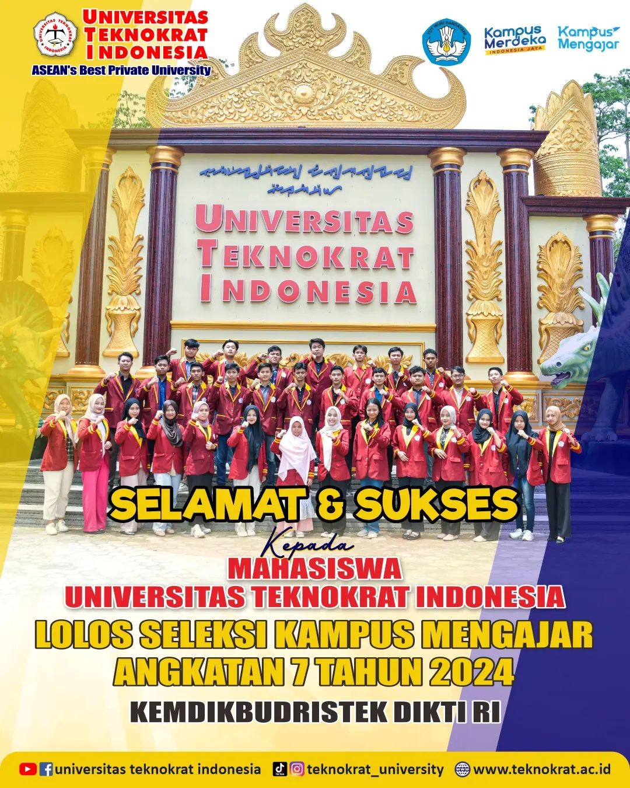
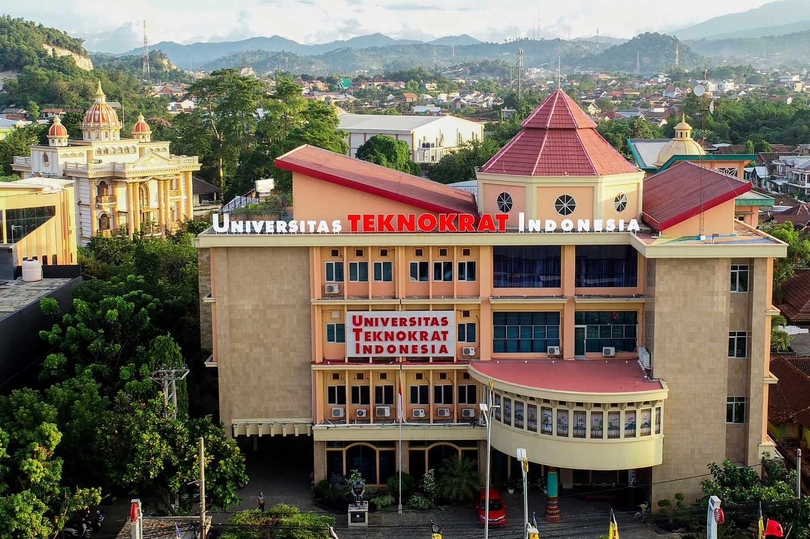

| News Flash |
|  |  |
 |
| Mahasiswa Universitas Teknokart Indonesia lolos kampus mengajar 7,Siap kontribusi terbaik | Riset di prancis, Dosen Universitas Teknokart Indonesia Syaiful Ahdan Hasilkan Jurnal Reputasi Internasional | Universitas Teknokart Indonesia Genjot Inofasi, Masuk klaster utama kemdikbudristek |